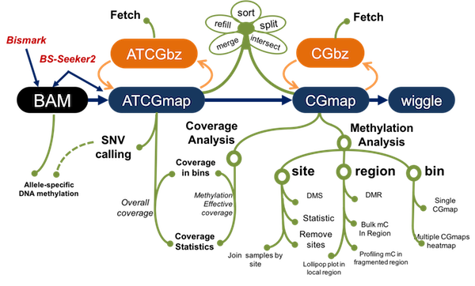

CGmapTools support BS-seq data analyses with command-lines

Citation
Weilong Guo * #, Ping Zhu *, et al. (2017), CGmapTools improves the precision of heterozygous SNV calls and supports allele-specific methylation detection and visualization in bisulfite-sequencing data, Bioinformatics, btx595, (* contribution equally, # corresponding)
DOI:10.1093/bioinformatics/btx595
Advanced Features
1. Unified data formats: CGmap and ATCGmap
Use standard CGmap/ATCGmap formats as central format, for ease of sharing methylomes. ATCGmap/CGmap could be derived from BAM files, which are produced by BS-Seeker2 or Bismark
2. Command-lines: convenient for parallel processing and to be extended
Support both Linux and MAC; Support STDIN and STDOUT, so as to support pipe
3. Binary formats: support instantly retrieving
binary compressed formats: CGbz for CGmap, ATCGbz for ATCGmap
4. Novel SNV calling strategies with high precision
introduced ambigous genotype prediction, and significantly improve the precision especially in heterozygous SNVs
5. Support ASM analyses and visualizaiton
use precise heterozygous SNVs as input, designed Tanghulu plots for showing allele-specific DNA methylation on reads
6. DMR analysis use dynamic fragmentation strategy for
useful for low-coverage (WGBS) and fragmented (RRBS) DNA methylomes
7. Multiple-levels analysis and visualization
provide user-friendly functions for visualizing methylomes at multiple levels, such as design a Tanghulu plot for visualizing methylation status on original reads, and design a Lollipop plot to reveal both lowly-covered cytosines and un-methylated cytosines in a local region
Example
$ cgmaptools -h
Program : cgmaptools (Tools for analysis in CGmap/ATCGmap format)
Version: 0.0.1
Usage: cgmaptools <command> [options]
Commands:
-- File manipulation
convert + data format conversion tools
fetch + fetch a region by random accessing
refill refill the missing columns
intersect intersect two files
merge2 + merge two files into one
mergelist + merge a list of files
sort sort lines by chromosome and position
split + split file by chromosomes
select + select lines by region/site
-- SNV analysis
snv snv analysis
-- Methylation analysis
dms differentially methylated site analysis
dmr differentially methylated region analysis
asm allele-specific methylation analysis
mbed average methylation level in regions
mbin * single sample, mC levels in bins
mmbin multiple samples, mC levels in bins
mfg methlation levels across fragmented region
mstat * methyaltion statistic
mtr methylation level to each region
-- Coverage analysis
oac +* overall coverage (for ATCGmap)
mec +* methylation effective coverage (for CGmap)
-- Graph related functions
lollipop * show local mC levels as lollipop bars
heatmap * global mC distribution for multiple samples
fragreg * show mC profile across fragmented regions
tanghulu * show local mapped reads in Tanghulu shape
-- Other Utils
findCCGG get MspI cutting sites for RRBS
bed2fragreg get fragmented region based on region
Note:
Commands support figures generation are marked with "*"
Commands contain sub-commands are marked with "+"
#Authors
- GUO, Weilong; guoweilong@126.com; http://guoweilong.github.io
- ZHU, Ping; pingzhu.work@gmail.com; http://perry-zhu.github.io
#Who is watching CGmapTools?